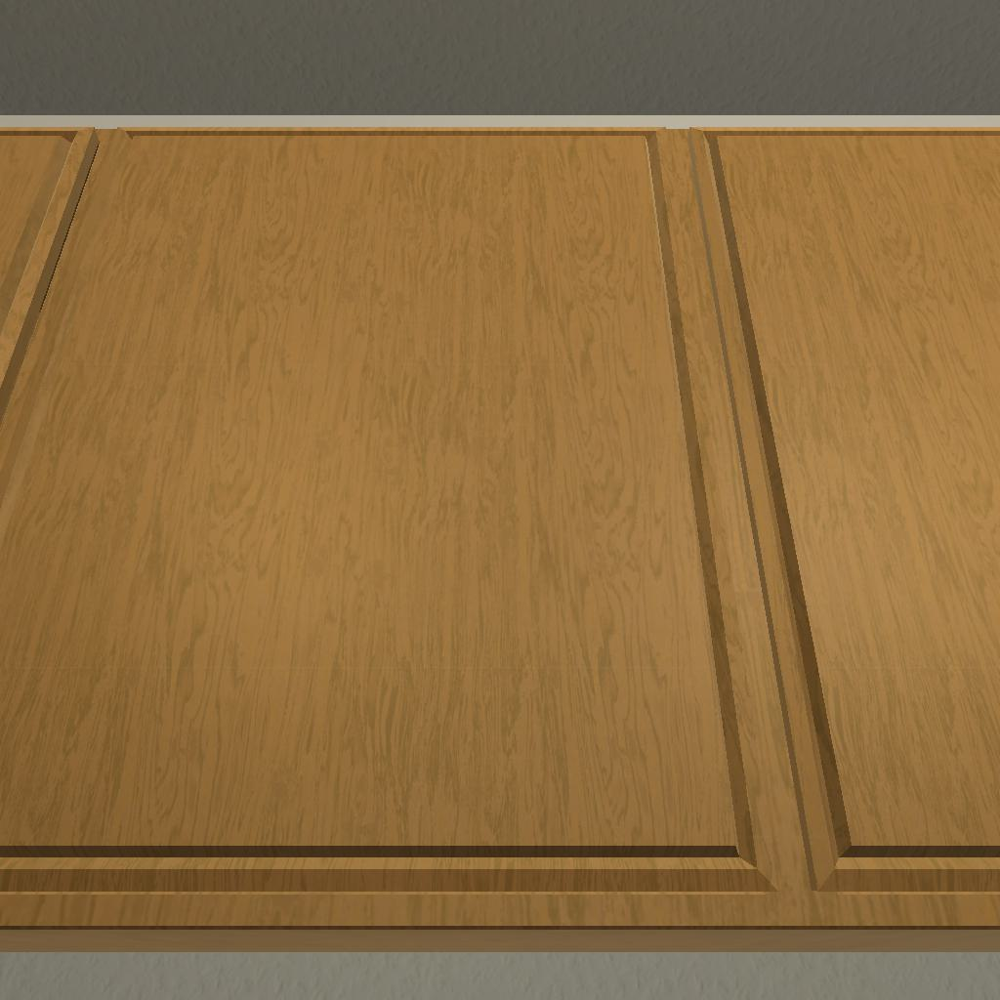

---------------------------------------------------------task: 22---------------------------------------------------------
--------------------------------------------------------------------------------------------------------------------------------------------------------------------
--------------------------------------------------------------------------------------------------------------------------------------------------------------------
Step:--------------------------------------------------------------------------12-------------------------------------------------------------------------------
----------------------------------------
VLM Prompt:
Image1:
Image2:
Image3:
**Instruction**
1. Analyze the provided images to identify all visible household objects and compare the difference between images (e.h. whether the object is opened or not and taken on hand or not), focusing on those relevant to the task description "put a hot egg in countertop."
2. Use the analysis of images and the task hint "The agent must find an object of the desired type, pick it up, go to a microwave, heat the object with the microwave, then find the correct location to place it, and put it down there. The agent does not need to use the microwave button or open the microwave to heat the object, and the agent just needs to do action that is "heat the object with the microwave"." to answer the question: what is the most reasonable action in the choices for the task description "put a hot egg in countertop"?
3. Decide and write the answer using the template: The answer is: (i): , where i is the real number. If there is no desired object in images, search every place based on **Initial Observation** to find the object. And if no one is exactly correct, choose a similar answer.
**Initial Observation**
You are in the middle of a room. Looking quickly around you, you can see cabinet (1-18), countertop (1-4), sink (1), drawer (1-7), sinkbasin (1), coffeemachine (1), microwave (1), garbagecan (1), stoveburner (1-4), toaster (1), fridge (1)
**Answer Choices**
(1): go to cabinet 1
(2): go to countertop 1
(3): go to cabinet 4
(4): go to cabinet 5
(5): go to sink 1
(6): go to cabinet 6
(7): go to drawer 1
(8): go to drawer 2
(9): go to sinkbasin 1
(10): go to cabinet 7
(11): go to cabinet 8
(12): go to coffeemachine 1
(13): go to cabinet 9
(14): go to countertop 2
(15): go to cabinet 10
(16): go to drawer 3
(17): go to drawer 4
(18): go to garbagecan 1
(19): go to drawer 5
(20): go to cabinet 11
(21): go to cabinet 12
(22): go to cabinet 13
(23): go to cabinet 14
(24): go to stoveburner 1
(25): go to countertop 3
(26): go to stoveburner 2
(27): go to stoveburner 3
(28): go to stoveburner 4
(29): go to drawer 6
(30): go to cabinet 15
(31): go to cabinet 16
(32): go to cabinet 17
(33): go to cabinet 18
(34): go to toaster 1
(35): go to drawer 7
(36): go to countertop 4
(37): go to fridge 1
(38): open microwave 1
(39): close microwave 1
(40): examine microwave 1
**Answer**
Let's think step by step by following the instructions.
----------------------------------------
----------------------------------------
Original Response:
First, we analyze the images provided:
- Image 1 shows cabinet doors that are closed.
- Image 2 shows countertop 2 with various objects on it, including a red coffee machine, a sink with a tap, and an egg on the countertop next to the sink. There is also a pan on the countertop.
- Image 3 shows countertop 3 with a microwave, a loaf of bread, a knife, and a fork.
According to the task description "put a hot egg in countertop," we need to find an egg, heat it in the microwave, and then place it on the countertop. From Image 2, we can see that there is already an egg on countertop 2, so we do not need to search for the egg in cabinets or drawers.
The task hint tells us that we do not need to use the microwave button or open the microwave to heat the object; we just need to do the action "heat the object with the microwave."
Based on the analysis and the task hint, the most reasonable action for the task description "put a hot egg in countertop" is to go to the microwave, heat the egg, and then put it on the countertop. However, since there is no action listed to "heat the object with the microwave," we must choose the action that would logically come before that, which is going to the microwave to perform the heating action.
The answer is: (40): examine microwave 1.
This action would bring us to the microwave, which is the necessary location to perform the next implied action of heating the egg, even though the specific action of heating is not listed as a choice.
----------------------------------------
----------------------------------------
>>> Refine Original VLM Response and Get Pure Action: examine microwave 1
----------------------------------------
-----------------------------------------------------------------
Running time: 38.69407820701599 seconds
Total Money: 13.959719999999995
-----------------------------------------------------------------
-----------------------------------------------------------------
Text Observation:On the microwave 1, you see a bread 1, a knife 1, a houseplant 1, a fork 1, a fork 2, and a pen 1.
-----------------------------------------------------------------
UNSUCCEED